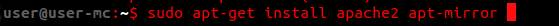
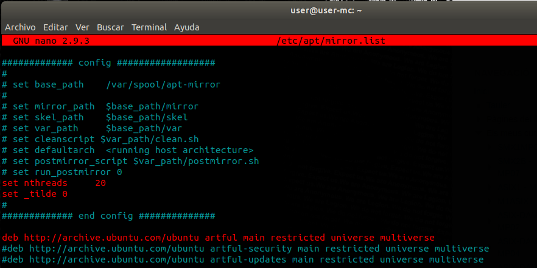
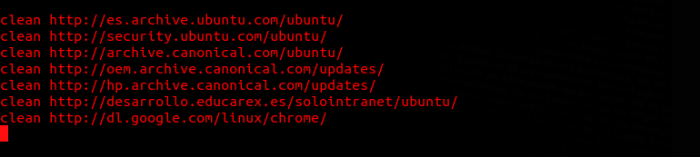
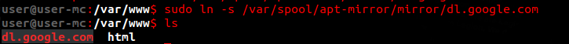
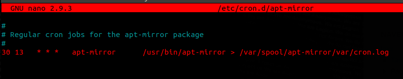
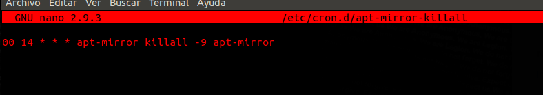
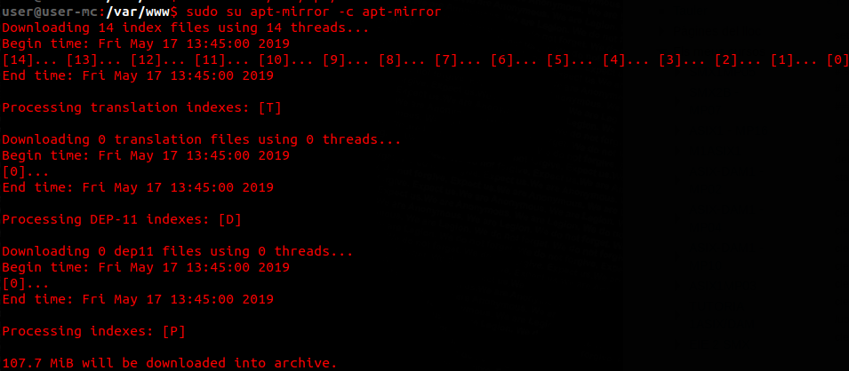
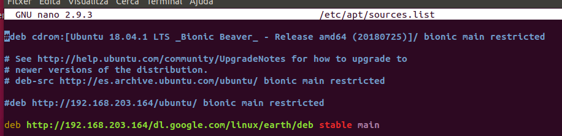
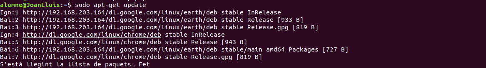

Servidor d'actualitzacions Linux
-
Aquest document relata el procediment de la instal·lació i configuració d'un servidor de repositoris sobre una màquina ubuntu:
1 Instal·lació:
- La instal·lació sol consta d'una pat-get. executarem
sudo apt-get installal terminal per a instal·lar els paquets: 
2 Configuració
- Primer haurem d'ediatar l'arxiu
/etc/apt/mirror.listper a deixarlo tal com està en la seguent imatge. si volem descarregar més repositoris sol ens caldrà apuntarlos juntament amb la resta:

 - Seguirem creant un softlink de
/var/spool/apt-mirror/dl.google.comal nostre directori arrel del servidor web:
 - Per a iniciar el servei ho podem fer amb un crontab:
 - Per a tancar-lo ho farem amb un altre crontab:
 - Finalment ens baixarem els repositoris previament configurats en en l'arxiu
mirror.listamb l'ordresudo su apt-mirror -c apt-mirror:
 - Un cop hem configurat el nostre server ara arriba el torn del nostre client. Aquí en mourem a l'arxiu
/etc/apt/sources.listi afegirem la líneadeb http://ip_server/path_repositori stable main:
 - Com podem veure, ara quan fem un update ens consulta als repositoris del nostre servidor: 
- La instal·lació sol consta d'una pat-get. executarem